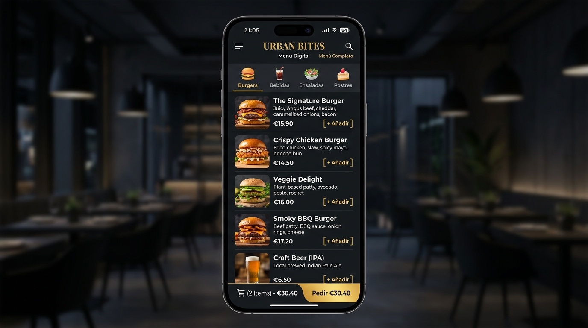
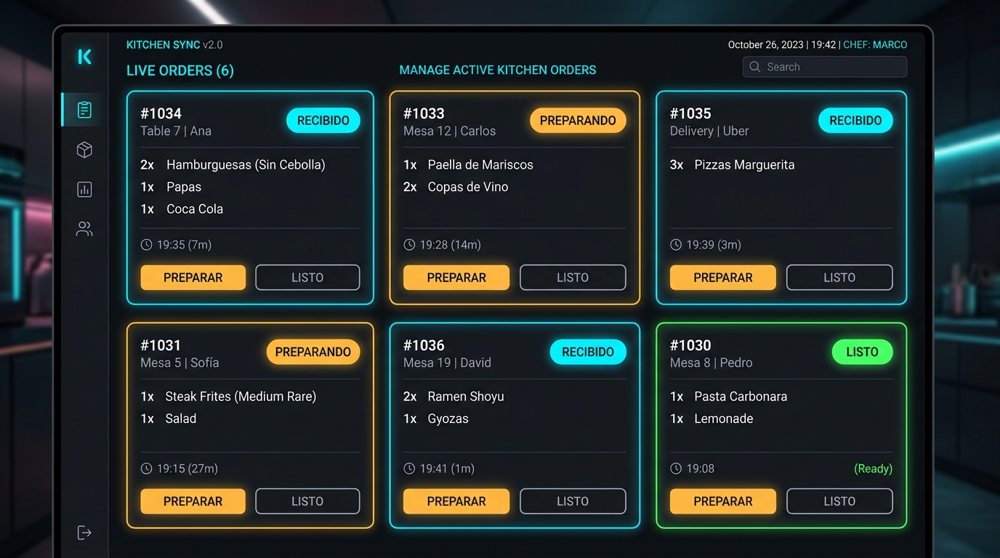
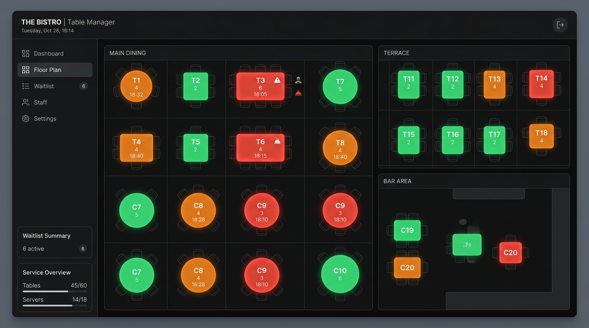

Guía de Uso Helpdesk
Aprende cómo funciona el motor de BarAI: desde que un cliente se sienta hasta el cobro y cierre automático de la mesa.
1. Experiencia del Cliente
El cliente es el centro del sistema. Para iniciar su experiencia, solo debe escanear el código QR situado en su mesa.
-
Apertura Automática: Al escanear el QR, el sistema identifica la mesa (ej. Mesa 5) y abre una sesión virtual segura, vinculada a ese dispositivo móvil.
-
Libertad de Pedido: El cliente navega por el menú, añade platos al carrito y confirma. La comanda viaja instantáneamente a cocina.
-
Cancelaciones Seguras: Si se equivoca, puede anularlo desde su móvil SOLO si el pedido sigue en estado Recibido. Si cocina lo acepta, el botón desaparece.
Si el cliente pulsa "Llamar Camarero", esto no interfiere con la vista de los cocineros, ya que el sistema filtra estas notificaciones automáticamente.


2. Gestión de Cocina y Barra
Este es el cerebro operativo. Todo el personal (Camareros y Cocineros) interactúa con este panel en tiempo real (sincronización por WebSockets).
Ciclo de vida de la Comanda
Recibido (Azul/Cian): El pedido acaba de entrar. Suena una notificación acústica.
Preparando (Naranja): El personal ha pulsado "Preparar". Ya no se puede cancelar sin un PIN de 4 dígitos del Administrador.
Completado (Verde): Plato terminado y llevado a mesa. Solo los completados suman a la cuenta final.
Los cocineros tienen una vista filtrada: no ven notificaciones de "Llamar camarero", solo ven tickets reales de comida o bebida, evitando distracciones.
3. El Croquis Inteligente
Mapa visual del restaurante que refleja el estado real de cada grupo de clientes.
Colores y Estados
Facturación y Cobro
- Al pulsar "Cobrar Mesa", el importe es el sumatorio exclusivo de pedidos Completados.
- No se puede cobrar algo no recibido. Lo que está "Preparando" se ignora.
- Tras cobrar, los pedidos huerfanos se cancelan y la mesa se pone verde.

4. Tickets Ecológicos (Email)
Para reducir el uso de papel, BarAI incorpora un sistema inteligente de tickets digitales.
Consumo
El cliente puede introducir su correo electrónico en cualquier momento tras pedir algo.
Modo Espera
El sistema no envía un correo por cada cerveza; encola el email inteligentemente.
Disparo Final
Al pulsar "Cobrar Mesa", se unen todos los consumos en un PDF con datos fiscales y se envía automáticamente.